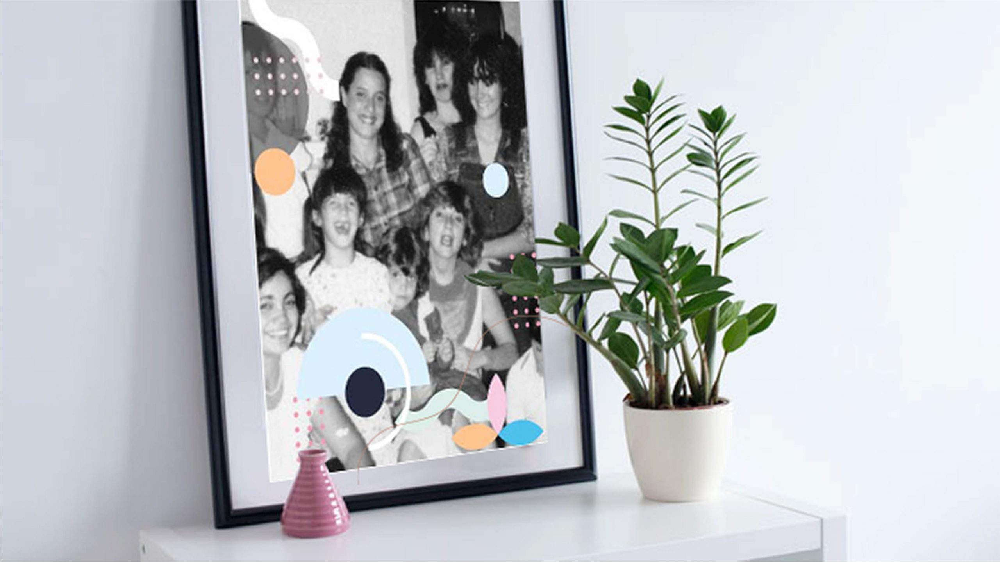
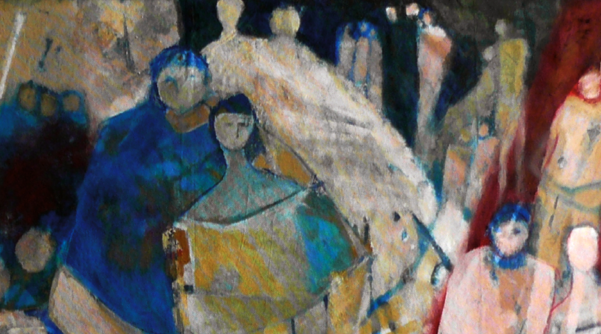
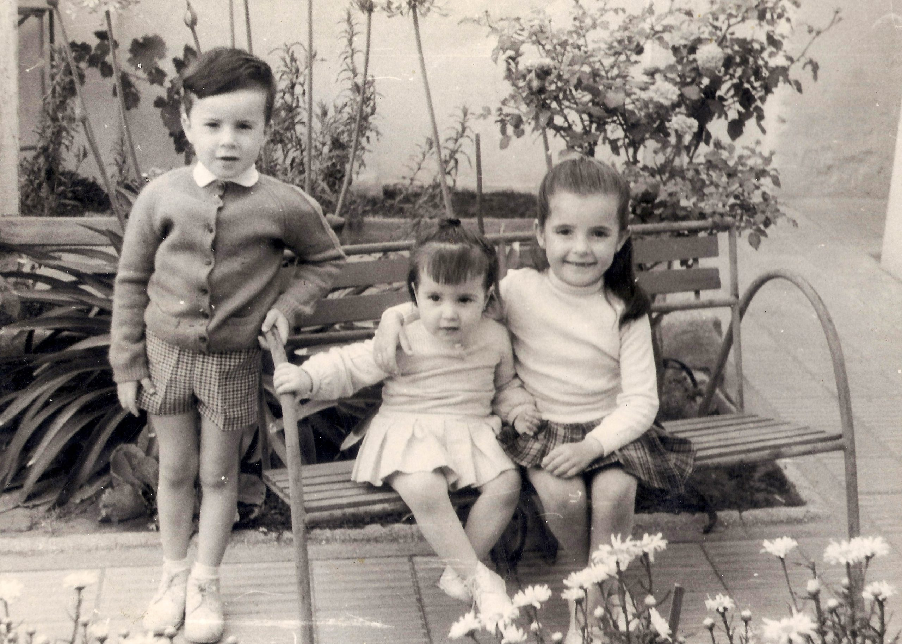
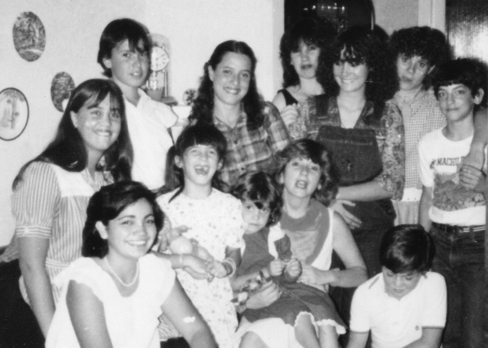
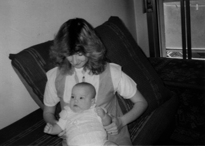
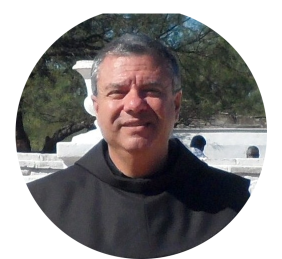
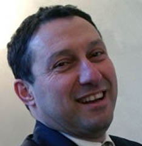

biografia
Curado por la comisión de la causa de beatificación.
Material de difusión

Curado por la comisión de la causa de beatificación.

Fotografía con la oración de intercesión para obtener gracias
Material sintético de difusión.
Un recorrido visual por su vida



Testimonios
“Es Dios quien da fuerza y lleva adelante estos procesos y causas y las va a llevar adelante teniendo presente no solo el modelo de santidad de Cecilia sino también el ejemplo que es Cecilia frente a los desafíos del mundo actual, frente a lo que Juan pablo llamaba la cultura de la muerte…Ceci dió la vida para dar su vida por la de su hija"…
"Cecilia, que fue una mujer joven, se dio cuenta que el mundo busca la alegría pero no la encuentra porque está lejos de Dios. Cecilia entendió que la alegría verdadera viene de Dios; que, con Jesús en el corazón, somos portadores de alegría.
Con su vida, Cecilia nos enseñó que el Señor es la fuerza que nos ayuda."

"Quisiera decirles también que comprendí un poco más nuestra santidad como expresión de una comunidad viva...
También yo experimenté que esta experiencia pone en luz no solo la santidad de vida de Cecilia, sino la santidad de Jesús en medio nuestro, y por lo tanto, nuestra santidad"...
